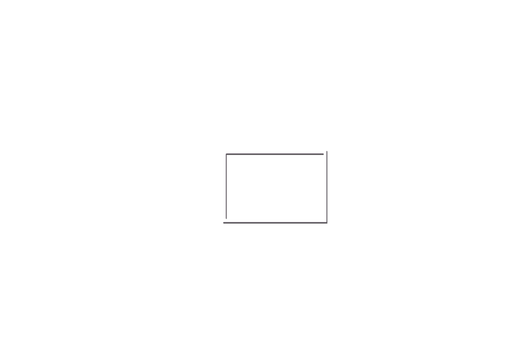
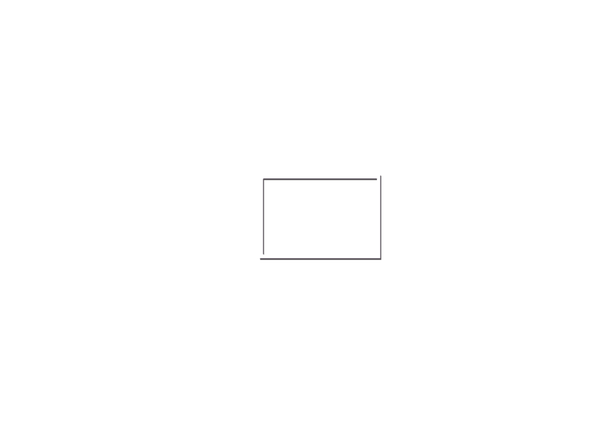

東山植物園サイン計画
2021/4/21-2021/6/4
サイン計画
東山植物園の現状問題をリサーチしフィールドワークを重ね、ペアワークで園全体の
サイン計画を行いました。
Illustrator Photoshop AfterEffect
Concept
東山植物園の利用ユーザーに調査を行い、親子連れの来園者が多い東山動物園に対し 植物園は高齢者が多いという現状から植物園にも親子連れがくるようにとターゲットを 親子連れに設定しました。子供が主体的に植物について学ぶことができるような植物園 をコンセプトに植物の説明サイン、園内マップ、誘導サイン、注意サインのサイン計画を 行いました。
園内マップ
園内マップには各エリアのキャッチコピーとエリアの豆知識動画が観れるARma-ka-,
各エリアに何があるか一目でわかるようなランドマークや植物のイラストが載っています。
子供が1人でも読めるように難しい感じをなくしたり、全ての漢字にふりがなを振ってあります。
また紙マップの裏側とエントランスマップの右側ではARインタラクションのためのアプリのダウンロード
を呼びかけています。
エントランスマップの台には木材を使用しターゲットに合わせた低い視点にし
地面に対して角度をつけて立ったまま見やすいようにしています。
説明サイン
スマホネイティブの世代に合わせ植物の説明サインはARを使ったインタラクションのある サインにしました。ARコンテンツ内では子供が植物について興味を持って主体的に学んでくれるように 植物の妖精が植物について説明してくれるという設定にしています。
誘導サイン
誘導サインはエントランスマップと同様に親しみのある木材を使用しています。
各エリアごとにランドマークや妖精のイラストをつけマップと見合わせやすいように
しました。
温室内は通路が狭く比較的混み合いやすい場所なため一通の誘導サインを用意しました。
注意サイン
足元の悪い道や立ち入り禁止の場所に設置する注意サインを考えました。 子供に伝わりやすいコミカルなデザインの注意サイン看板です。
この課題はペアワークで行ったため1人の政策では経験できなかった協調性や計画性の大事さを 学ぶことができました。
‹ prev
next ›